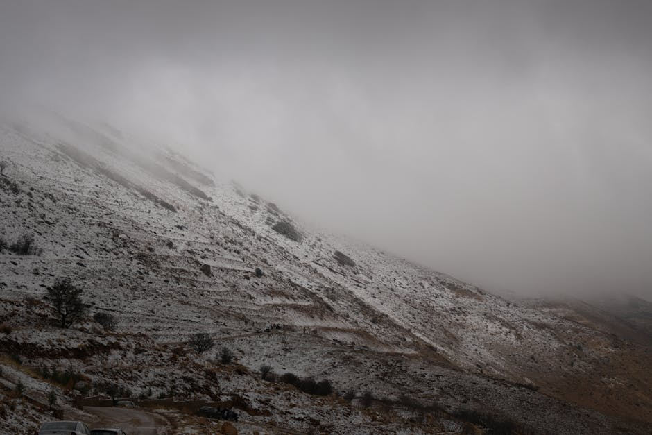
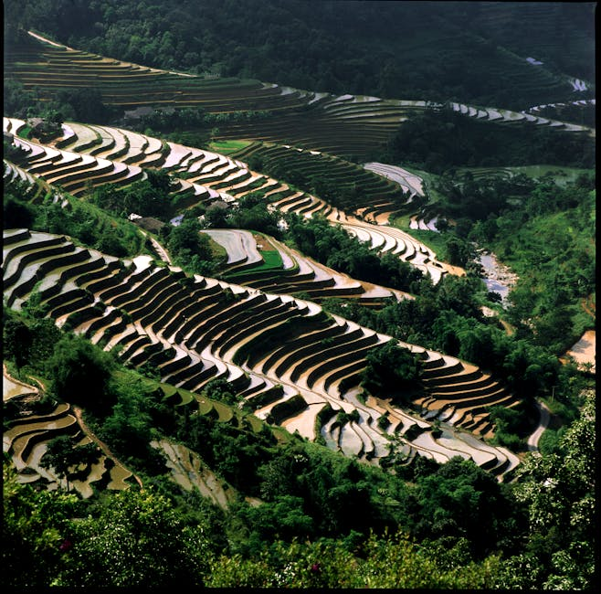
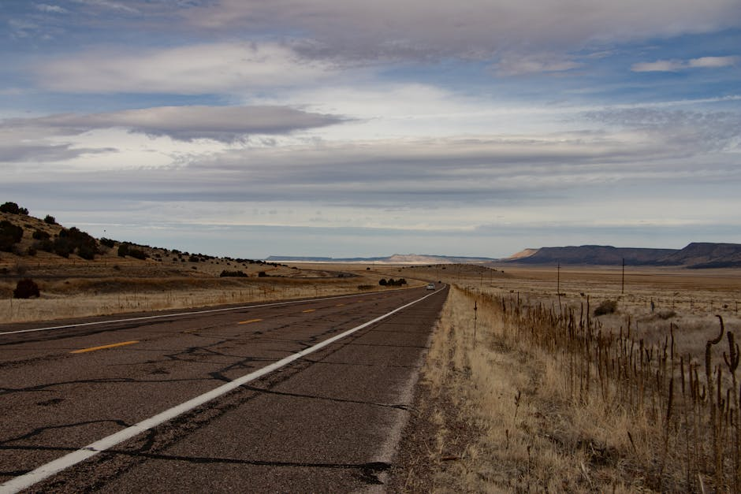
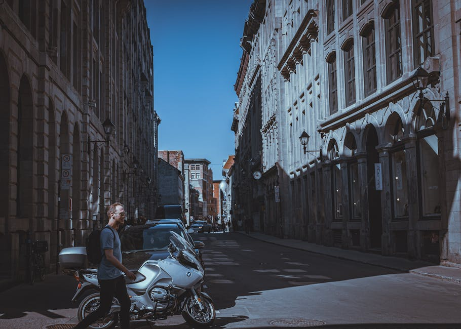
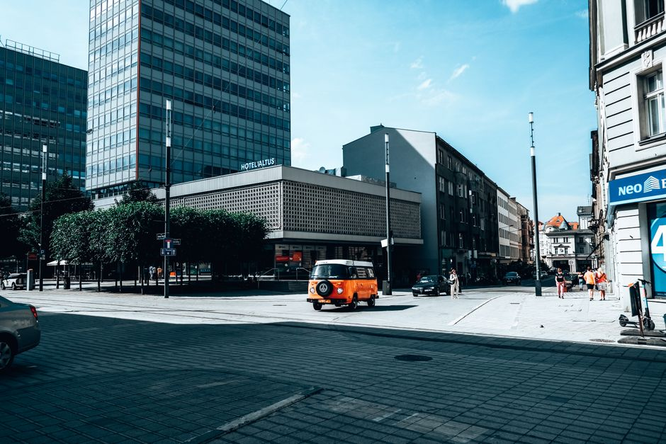
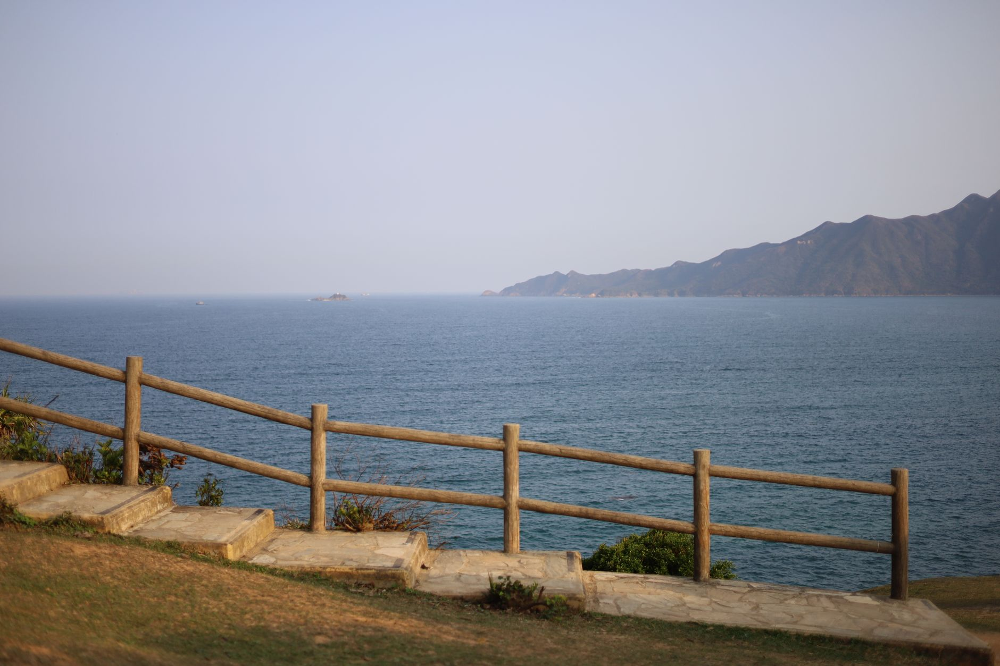

The tea house at the end of the lane
A month of mornings spent learning to do one small thing very well.
Faraway is a travel journal of long stays, small places, and the stories you only find when you stop rushing.

A month of mornings spent learning to do one small thing very well.

On mezcal, mole, and the slow art of being a regular somewhere new.

Seven days, one path, and the particular silence of very old hills.

What twelve months of staying — really staying — in twelve different towns taught us about home, belonging, and the myth of the perfect place.
Read the series
Portugal
JapanJoin 38,000 readers getting our latest dispatch, guides, and photos. No spam, ever.